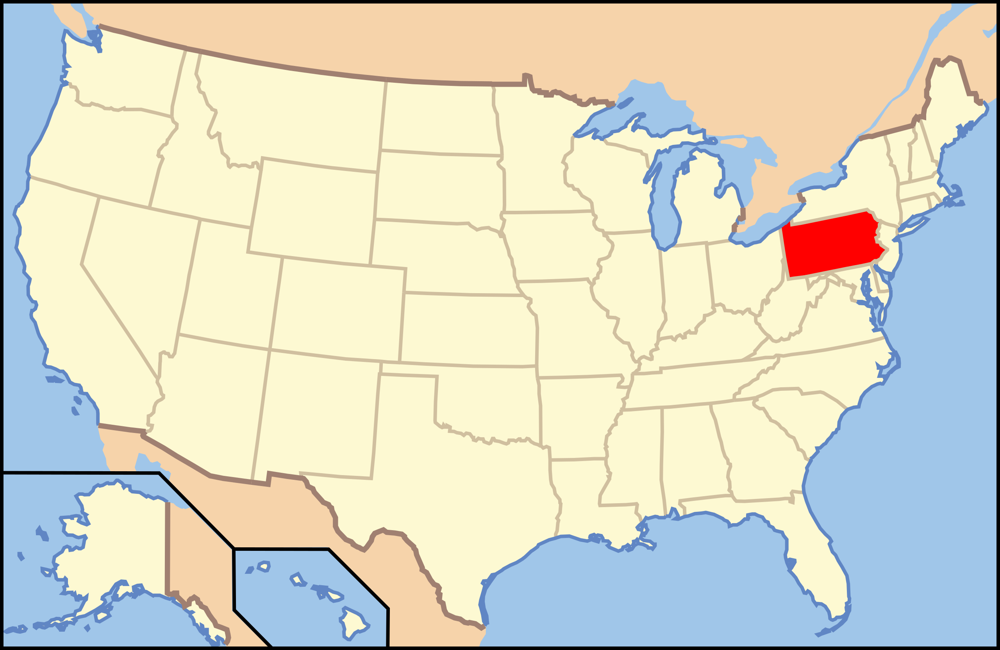

Pennsylvania

1. General Kane Trail - Kinzua Bridge State Park

Steve 1828/Flickr
| Grade: Short |
|---|
| More Images |
| Trail Link |
2. Hidden Lake Loop - Delaware Water Gap National Recreation Area

Colin Whitesall/Alltrails
| Grade: Short |
|---|
| More Images |
| Trail Link |
3. Little Falls - Promised Land State Park

Paul Lewis/Alltrails
| Grade: Short |
|---|
| More Images |
| Trail Link |